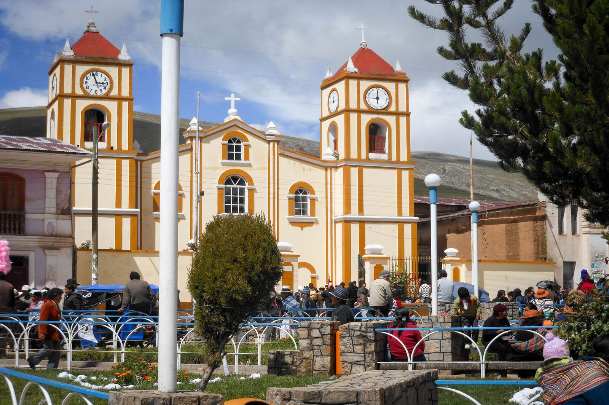

Se remodela la Plaza Principal de San Pedro de Cajas
El proyecto busca recuperar, modernizar y poner en valor uno de los espacios más emblemáticos e históricos del distrito, respetando su identidad y su profundo significado cívico y religioso.
Ver publicación →